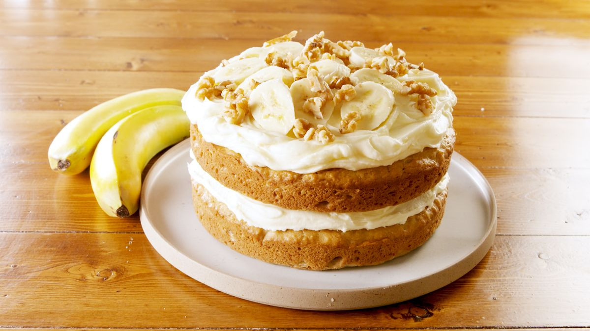

Banana Cake Recipe

Description
This is, hands down, the best banana cake I’ve ever had. It’s soft, moist and rich all at the same time! Once cooled this cake is topped with a totally irresistible lemon cream cheese frosting for a perfect dessert your family will love.
Ingredients
Cake
- 1.5 cups milk
- 2.5 tablespoons lemon juice
- 1.5 cups mashed bananas
- 0.75 cups butter
- 0.5 cups brown sugar
- 1 cup white sugar
- 3 large eggs
- 1 teaspoon vanilla
- 3 cups flour
- 1.5 teaspoons baking soda
- 0.25 teaspoon salt
Frosting
- 8 ounces cream cheese
- 0.75 cups butter
- 1 teaspoon lemon juice
- 1.5 teaspoons lemon zest
- 1.5 cups powdered sugar
Steps
Cake
- Preheat oven to 350°. Grease and flour a 9 x 13 pan.
- Place 1.5 tablespoons lemon juice in a measuring cup. Top to 1.5 cups with milk. Set aside.
- Mix together mashed banana with 1 tablespoon lemon juice, set aside.
- Beat together butter, brown and white sugar until combined. Add in eggs one at a time and vanilla. Mix on high until light and fluffy (almost the texture of frosting).
- Combine flour, baking soda and salt in a medium bowl. Alternate adding flour mixture and milk to egg mixture stirring just until combined. (Do not overmix). Fold in bananas. Pour into prepared pan.
- Put into the oven and reduce heat to 300°F. Bake 60 – 70 minutes (see note below) or just until toothpick inserted in center comes out clean (do not over bake).
- Remove from oven and place in the freezer for 45 minutes to make the cake extra moist. Cool completely before frosting.
Frosting
- Cream together butter & cream cheese until fluffy. Add in lemon zest and juice.
- Add powdered sugar a little at a time until you reach desired consistency. Spread over cooled cake.
Recipes Home